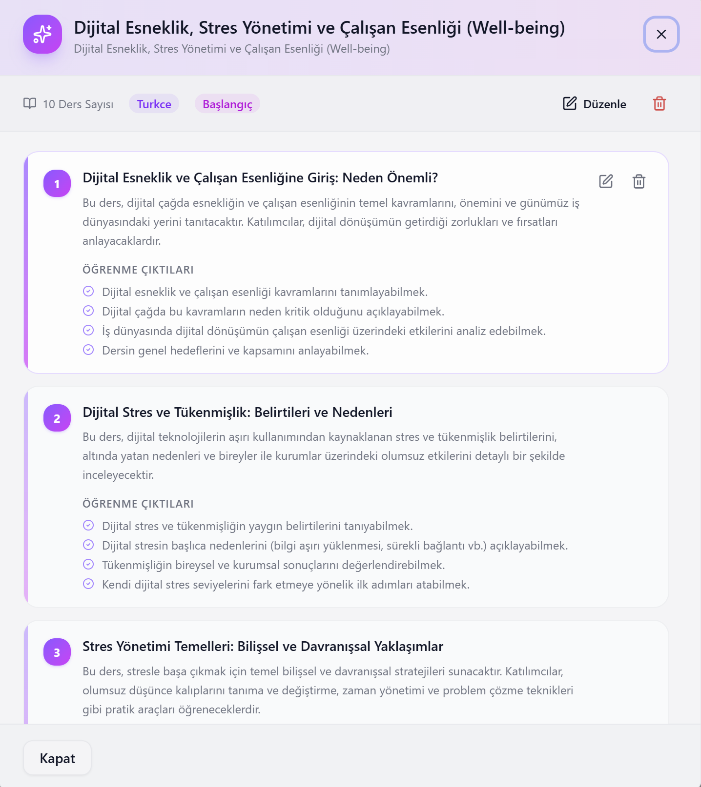
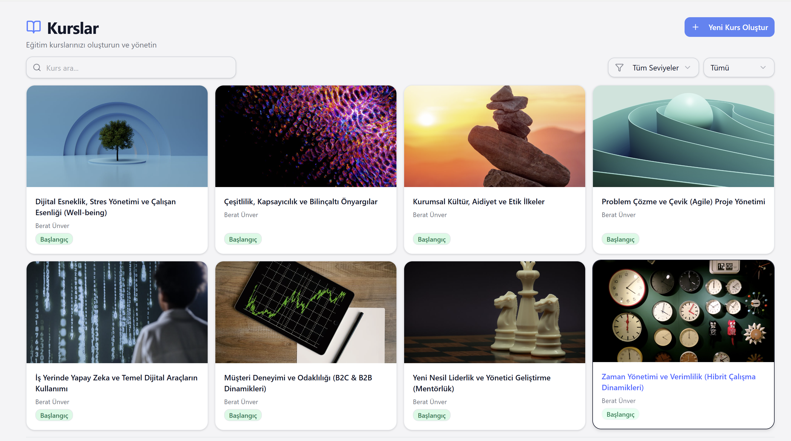
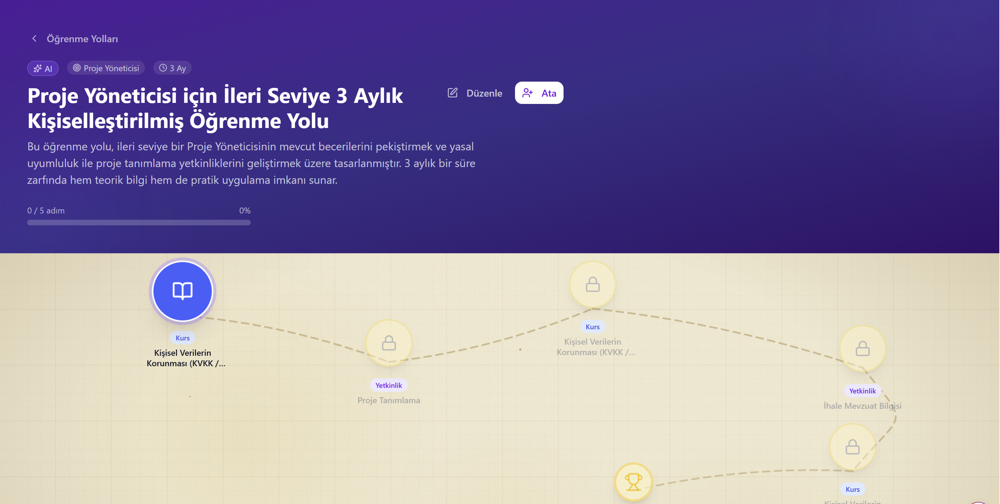
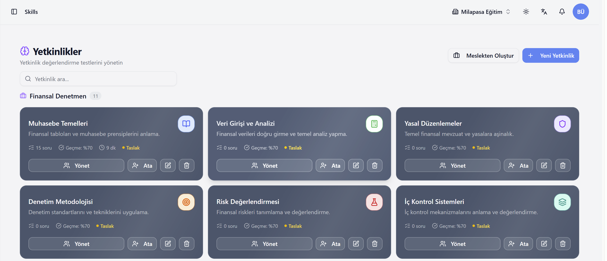
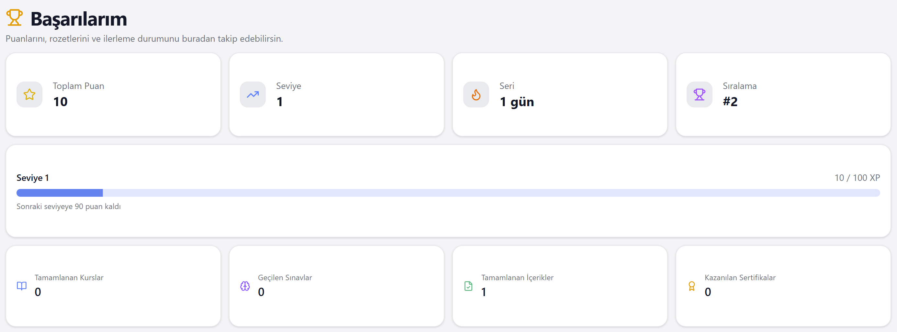
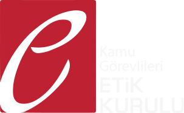

Yeni Nesil Öğrenme Deneyimi
Öğrenme Deneyimini
Yapay Zeka ile Yeniden Tanımlıyoruz
PDF, Word veya sunumlarınızı yükleyin; yapay zeka dakikalar içinde kursunuzu, quizinizi ve eğitim videolarınızı hazırlasın. Klasik LMS değil — kurumunuza özel, sınırsız kullanıcılı öğrenme deneyimi platformu.
Klasik LMS'leri Geride Bırakın
Karne, öğrenme yönetim sistemi değil — tam anlamıyla bir öğrenme deneyimi platformudur.
Klasik LMS
- Statik içerik yönetimi — içeriği kendin hazırlamak zorunda kalırsın
- Teknik ekip gerektirir, IT bağımlılığı yüksektir
- Kullanıcı ve içerik sınırı, ek lisans maliyeti
- Sadece kurs tamamlama takibi — öğrenme deneyimi yok
- Oyunlaştırma, yetenek ve kariyer gelişimi desteklenmez
- Yerinde kurulum ya da bulut — ikisi birden değil
Karne LXP
- Yapay zeka ile saniyeler içinde içerik üretimi — teknik bilgisiz
- Teknik bilgisi olmayan herkes yönetebilir, IT bağımlılığı yok
- Sınırsız kullanıcı ve içerik — büyüdükçe maliyet artmaz
- Oyunlaştırma, yetenek değerlendirme ve kariyer yolu ile gerçek öğrenme deneyimi
- Kariyer gelişimi, oryantasyon ve anlık bilgilendirme entegre
- Yerinde kurulum veya karne.app bulutu — her ikisi de mümkün
İçerik Üretmek Hiç Bu Kadar
Kolay Olmamıştı
Elinizdeki materyale göre kendinize uygun yolu seçin. Hangi başlangıç noktasında olursanız olun, sonunda yayına hazır bir eğitim çıkıyor.
Hazır dökümanınız mı var?
Yükleyin, AI kurs yapsın
PDF, Word veya PowerPoint dosyanızı bırakın. Yapay zeka bölümleri, özetleri, test sorularını ve öğrenme çıktılarını otomatik oluşturur.
Sadece konu mu var?
Anlatın, AI taslak çıkarsın
Konunuzu ve hedef kitlenizi yazın. AI önce taslağı sunar, onayınızla birlikte tam içeriği yazar.
Eğitim videosu mu istiyorsunuz?
Yükleyin, AI seslendirsin
PDF veya sunumunuzdan, yapay zeka sesiyle anlatımlı eğitim videosu çıkar. Çekim yok, montaj yok.

Bölümler, Öğrenme Çıktıları ve Ders Detayları
Her ders için AI tarafından hazırlanan içerik yapısı, öğrenme çıktıları ve ayrıntılı açıklamaları tek ekranda görün. İstediğinizi düzenleyin veya onaylayın.
- Otomatik oluşturulan öğrenme çıktıları
- Bölüm başına açıklama ve içerik özeti
- Düzenleme ve onaylama tek tıkla

Tüm bunlar tek bir platformda, teknik bilgisiz, dakikalar içinde.
Karne'nin yapay zeka motoru, eğitim içeriği üretimindeki en büyük engeli ortadan kaldırır: zaman ve uzmanlık ihtiyacı. Artık herkes profesyonel eğitim hazırlayabilir.
PDF Yükle, Eğitim Videosu Hazır
Elinizdeki PDF belgelerini yapay zeka ile tematik bölümlere ayırın, video stilini seçin ve dakikalar içinde seslendirilmiş profesyonel eğitim videolarına dönüştürün.
PDF'i Yükle ve İçerik Oluştur
PDF dosyanızı sürükle-bırak ile yükleyin. İçerik dilini, zorluk seviyesini ve hedef video süresini seçin. Yapay zeka tematik bölümler oluşturur ve ders içeriğini hazırlar.
- Maksimum 30 MB, yalnızca metin tabanlı PDF
- Dil ve zorluk seviyesi seçimi
- Hedef video süresine göre AI anlatım metni


Video Stili Seç, Eğitim Videosuna Dönüştür
Oluşturulan bölümleri inceleyin, her bölümün görsel ve metin içeriğini düzenleyin. Video stilini belirleyin ve tek tıkla eğitim videosuna dönüştürün.
- Kurumsal logo eklenebilir
- Metin içeriği olarak da kaydedilebilir
- Tüm bölümleri tek seferde dönüştür
Öğrenmek Artık Bir Deneyim
Karne, çalışanlarınızı kurs izlemenin ötesine taşır. Oyunlaştırma'dan kariyer gelişimine, yetenek değerlendirmeden anlık bildirimlere — tam bir öğrenme ekosistemi.
Oyunlaştırma
Puanlar, rozetler, liderlik tablosu ve başarı seviyeleriyle öğrenmeyi motive edici bir deneyime dönüştürün. Tamamlama oranları dramatik biçimde artar.
Yetenek Değerlendirme
Çalışanlarınızın yetkinlik haritasını çıkarın. Hangi becerilerde güçlü, nerelerde gelişim gerekiyor? Karne bunu otomatik analiz eder ve kişiselleştirilmiş öğrenme yolları önerir.
Kariyer Yolu
Pozisyon bazlı kariyer gelişim yolları tanımlayın. Çalışanlar, bir üst role geçebilmek için hangi becerileri kazanmaları gerektiğini net biçimde görür ve o yolda ilerler.
Oryantasyon Süreçleri
Yeni çalışanları hızla kuruma entegre edin. Oryantasyon programlarınızı bir kez hazırlayın, her yeni başlayan otomatik olarak sürece dahil edilsin. İlk gün deneyimi baştan değişir.
Anlık Bilgilendirme
Duyuru, güncelleme veya acil eğitimleri anında tüm ekibinize iletin. Anlık bildirim, e-posta veya uygulama içi mesajla kurumunuzun tüm birimleri her zaman bilgili kalır.
Detaylı Raporlama
Birey, ekip ve kurum bazında derinlemesine analitikler. Kim ne öğrendi, hangi içerik ne kadar tamamlandı, hangi bölümde takılındı? Tüm veriler tek ekranda, dışa aktarılabilir formatlarda.
Zengin Kurs Kataloğu, Kolayca Yönetin
Tüm eğitimlerinizi tek ekrandan görüntüleyin, yeni kurs oluşturun, seviyeye ve kategoriye göre filtreleyin.

Kurs Detayı ve İçerik Yönetimi
Kurslar, dersler ve öğrenme çıktılarıyla tam yapılandırılmış içerik yönetimi. Her çalışan tam olarak ne öğreneceğini ve nerede olduğunu bilir.
- Ders sıralama ve yayın durumu kontrolü
- Sertifika ve forum entegrasyonu
- Anlık raporlar ve ilerleme takibi

Ders İçerikleri ve Öğrenme Çıktıları
Her ders için AI tarafından hazırlanan içerik yapısını, öğrenme çıktılarını ve açıklamaları tek ekranda görün ve düzenleyin.
- Bölüm bazlı öğrenme çıktıları
- Zorunlu ve seçmeli ders ayrımı
- İçerik düzenleme kolaylığı
Kişiselleştirilmiş Öğrenme Yolları
Her çalışana, kariyer hedeflerine ve mevcut yetkinliklerine göre özelleştirilmiş öğrenme yolları tanımlayın. Görsel harita ile ilerlemeyi adım adım takip edin.
-
Pozisyon ve hedef bazlı kişiselleştirilmiş yollar
-
Görsel harita ile adım adım ilerleme takibi
-
Kilit aktiviteler, zorunlu adımlar ve önkoşullar
-
3 aylık, 6 aylık veya özel süre planlaması


Ekibinizin Yetkinlik Haritasını Çıkarın
Her pozisyon için yetkinlikler tanımlayın, değerlendirmeler yapın ve çalışanlarınızın hangi becerilerde güçlü, nerede gelişim gerektiğini net olarak görün.
-
Departman ve pozisyon bazlı yetkinlik grupları
-
Geçme eşiği belirleme ve otomatik değerlendirme
-
Çalışanlara yetkinlik atama ve ilerleme takibi
-
Meslekten bağımsız çoklu yetkinlik grubu desteği
Yetkinlik değerlendirme sonuçlarına göre sistem otomatik olarak çalışanlara uygun kursları ve öğrenme yollarını önerir.
Öğrenmeyi Ödüllendirin
XP puanları, seviye atlama, sıralama tablosu ve günlük seri takibiyle çalışanlarınızın öğrenme motivasyonunu sürekli canlı tutun.
-
XP puanları, seviye sistemi ve ilerleme çubuğu
-
Sıralama tablosu ile kurumsal rekabet
-
Günlük seri (streak) takibi
-
Tamamlanan kurslar, sınavlar ve kazanılan sertifikalar

Sınırsız Kullanım, Esnek Altyapı
Büyüdükçe maliyet artmasın. Güvenlik ve veri egemenliği konusunda taviz vermeyin.
Kullanıcı ve Eğitim İçeriği Sınırı Yok
5 kişi de kullansa, 50.000 kişi de — fiyat değişmez. İçerik sayısı artsa da ek maliyet olmaz. Gerçek anlamda ölçeklenebilir.
Yerinde Kurulum
Platform, kurumunuzun kendi sunucularına kurulur. Tüm veriler sizin altyapınızda kalır. Veri egemenliği ve güvenlik önceliğinizse bu seçenek tam size göre.
- Veriler kurumunuzun sunucusunda
- Tam kontrol, özel yapılandırma
- Mevcut altyapıyla entegrasyon
Bulut — karne.app
karne.app üzerinde kurumunuza özel bir alan açılır, markanız ve domain'iniz ile tam entegre çalışır. Altyapı bizden, siz sadece içeriğinize odaklanın.
- 1-2 günde canlıya alın
- Kurumsal marka ve domain
- Bakım ve güncelleme bizden
Referanslar ve Ortaklarımız
Türkiye'nin önde gelen kamu kurumları ve akademik kuruluşlar Karne'ye güveniyor
Avrupa Birliği Türkiye Delegasyonu
Türkiye'deki resmi AB temsilciliği; eğitim girişimlerini ve mesleki gelişim programlarını destekler.
Yıldız Teknik Üniversitesi
Eğitim programlarımıza akademik uzmanlık ve araştırma desteği sağlayan köklü teknik üniversite.
Aile ve Sosyal Hizmetler Bakanlığı
Mesleki eğitim girişimleriyle sosyal refah ve aile desteğini güvence altına alan Türkiye Cumhuriyeti bakanlığı.
Ulaştırma ve Altyapı Bakanlığı
Ulaşım sistemleri ve altyapı geliştirme alanında özel eğitimler sunan Türkiye Cumhuriyeti bakanlığı.

Kamu Görevlileri Etik Kurulu
Kamu hizmetinde yüksek mesleki etik standartlarını ve dürüstlüğü güvence altına alan resmi kurul.
Dışişleri Bakanlığı — AB İşleri Genel Müdürlüğü
Uluslararası ilişkiler ve AB uyum süreçlerini kapsamlı eğitim programlarıyla yürüten Türkiye Cumhuriyeti bakanlığı.
Aklınızdaki Sorular
Karne hakkında en çok merak edilenler
Karne nedir ve kimler için uygundur?
Yapay zeka ile nasıl eğitim içeriği üretebilirim?
Kullanıcı ve içerik sınırı var mı?
Karne'yi kendi sunucularımıza kurabilir miyiz?
Karne klasik LMS'den ne farkı var?
Karne KVKK uyumlu mu?
Karne, Moodle veya diğer LMS'lere göre ne avantaj sağlar?
Kaç dakikada eğitim içeriği hazırlanabilir?
Karne sertifika veriyor mu?
Üretin. Yönetin. Geliştirin.
Kurumunuzun Tüm Öğrenme Deneyimi Tek Platformda.
Demo'ya kadar ücret yok, taahhüt yok. Uzmanlarımız size platformu canlı göstersin, kurumunuza özel bir çözüm planlayalım.
Bizimle İletişime Geçin
Demo taleplerinize 24 saat içinde geri dönüyoruz
E-posta
info@milapasa.comTelefon
+90 535 104 94 35Adres
ARDVENTURE, Söğütözü Cd. No: 2,Koç Kuleleri C Blok 17,
06510 Çankaya/Ankara, Türkiye
Demo'da sizi neler bekliyor?
- AI içerik üretiminin canlı demosu
- Kurumunuza özel fiyat teklifi
- Yerinde kurulum veya bulut danışmanlığı
- 30 günlük ücretsiz deneme imkânı